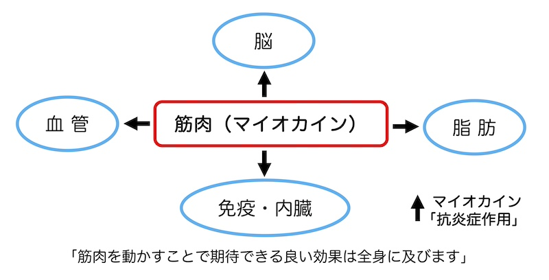

公開日：2026年4月｜最終更新：2026年7月
運動をすると、筋肉から「マイオカイン」と呼ばれる物質が分泌されます。このマイオカインは、血流に乗って身体中に運ばれ、さまざまな臓器に良い影響を与えると考えられます。
マイオカインには多くの種類がありますが、体の炎症を抑える方向に働くものが多いことがわかってきています。
この働きを、ここでは「抗炎症作用」と呼びます。
「マイオカイン」について
「筋肉と脳の関連性｜運動と認知症予防」を参照ください。

第１章 マイオカインは体のあちこちで働きます
1）脳での働き
「脳の血流を良くする」「神経の成長を助ける」「認知機能の低下を防ぐ」などの作用を通して、認知症予防の効果が期待できます。
2）脂肪組織では
「内臓脂肪を減らす」「炎症を抑える」などの作用を通して、生活習慣病の予防が期待できます。
コラム：脂肪組織の抗炎症効果（少し詳しく）
脂肪のうち、内臓脂肪が増えると、体の中で炎症が起こりやすくなります。この状態が続くと、インスリンが効きにくくなり、糖尿病や動脈硬化の原因になります。
運動によって分泌されるマイオカインは、内臓脂肪を減らし、脂肪組織の炎症を抑える働きを持ち、生活習慣病の予防に役立つと考えられています。
3）血管・心臓では
「血管の働きを改善」「動脈硬化の予防」などを通して、心臓病や脳卒中の予防が期待できます。
コラム：血管・心臓系の抗炎症効果（少し詳しく）
血管の炎症により、血管内皮の機能不全や血管の硬化が起こります。マイオカインの抗炎症作用により、血管の弾力性が改善し、血流の改善や動脈硬化の予防が期待されます。
4）免疫系では
「体の慢性的な炎症を抑える」「免疫のバランスを整える」などの効果を通して、老化や病気の進行を抑える効果が期待できます。
コラム：免疫系の抗炎症効果（少し詳しく）
体の慢性的な炎症とは、体の中で小さな火種がずっと残っている状態です。この状態が続くと、動脈硬化、糖尿病、認知症、フレイルなどにつながると考えられています。
マイオカインは、炎症を起こす免疫細胞（炎症性マクロファージ）を減らし、炎症を抑える免疫反応（抗炎症性マクロファージ）を増やすことで、免疫のバランスを整える働きがあると考えられています。
5）消化器・代謝系では
「血糖値の改善」「インスリンの働きを助ける」などの作用を通して、糖尿病の予防効果が期待できます。
コラム：消化器・代謝系での抗炎症作用（少し詳しく）
マイオカインは、各組織の細胞に働きかけ、インスリン抵抗性（インスリンに反応しないこと）を低下させ、細胞内へのグルコース取り込みを高めます。その結果、血糖値の改善、基礎代謝の向上、脂肪の減少などが期待できます。
マイオカインは、筋肉から出る「体を守るメッセージ物質」です。体のあちこちで炎症を抑え、血管・脳・脂肪・免疫の働きを整えることで、さまざまな病気の予防に役立つと考えられています。
第２章 脳の炎症を抑える
近年の認知症研究では、脳内の慢性炎症が重要視されています。記憶を司る海馬や、判断力を司る前頭葉での炎症は、認知機能（記憶力、判断力）の低下を引き起こします。
また、脳の免疫細胞であるミクログリアの慢性炎症も、認知症の進行に関与すると考えられています。
マイオカインは、これらの部位に作用して炎症を抑えることが期待されています。つまり、運動により筋肉を動かすと、脳にも好影響を及ぼすのです。
コラム：脳での作用（少し詳しく）
筋肉で作られたマイオカインの一部は、血液脳関門を通過できます。一方、脳を元気にする物質として知られるBDNFは、血液から直接脳に入る量は多くありません。
現在の研究では、マイオカインの直接作用と、体の状態改善による脳内BDNF増加の2つの仕組みで、脳の炎症が抑えられると考えられています。
第３章 まとめ
運動すると、筋肉から「マイオカイン」という物質が分泌されます。この物質は、脳・血管・脂肪・免疫など、体のさまざまな部分に働きかけ、全身の炎症を抑える方向に作用します。
その結果、認知症、糖尿病、動脈硬化、フレイルなどの予防につながると考えられています。
筋肉を動かすことは、体全体を守ることにつながるのです。
参考文献
- Pedersen BK, Ficher CP, Trends Pharmacol Sci, 28, 152 (2007)
- Pedersen Bk, Febbraio MA, Physiol Reviews 88, 1379 (2008)
- Nishii K, Aizu N, Yamada K, Fujita Med J 9, 171 (2023)